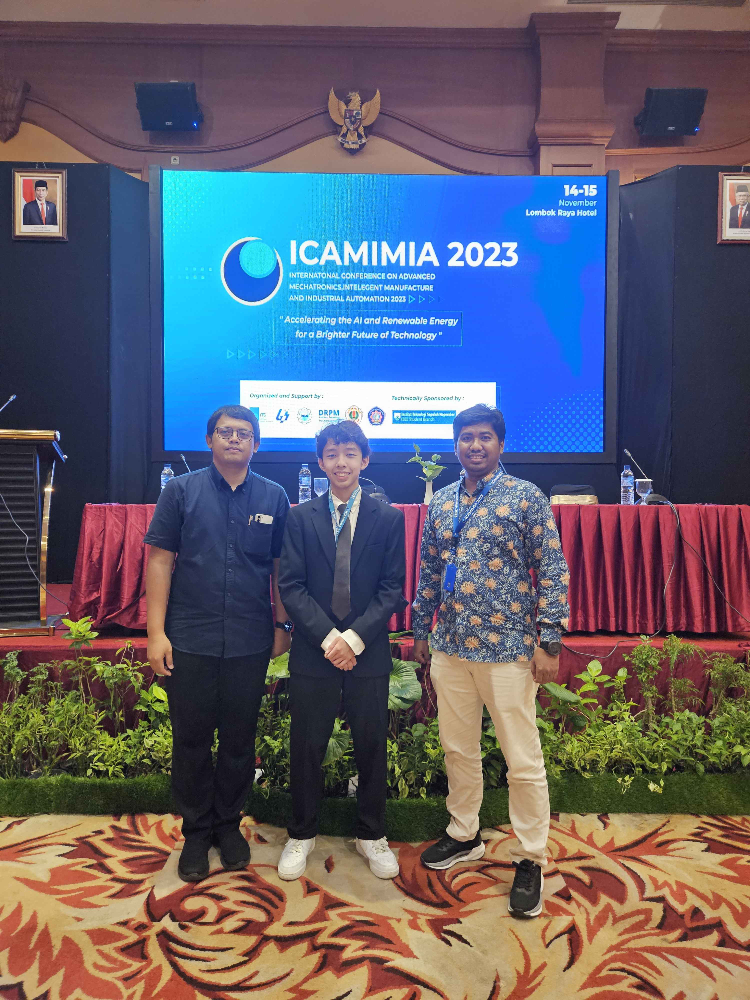
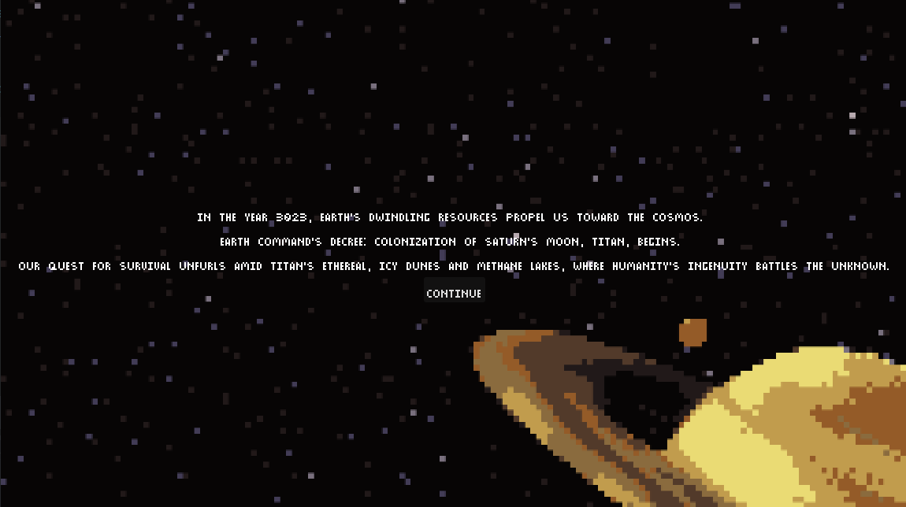
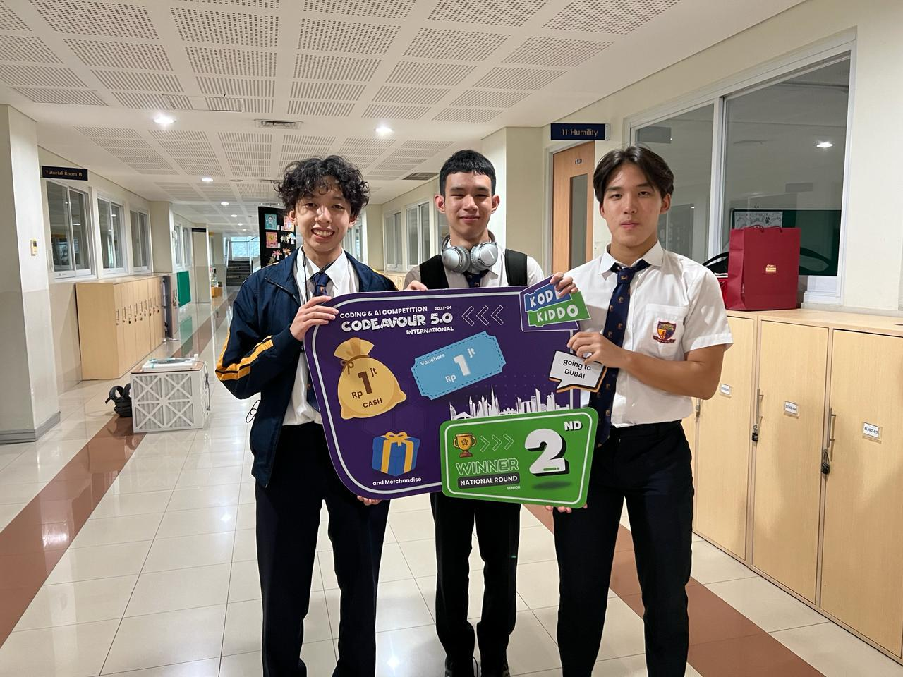
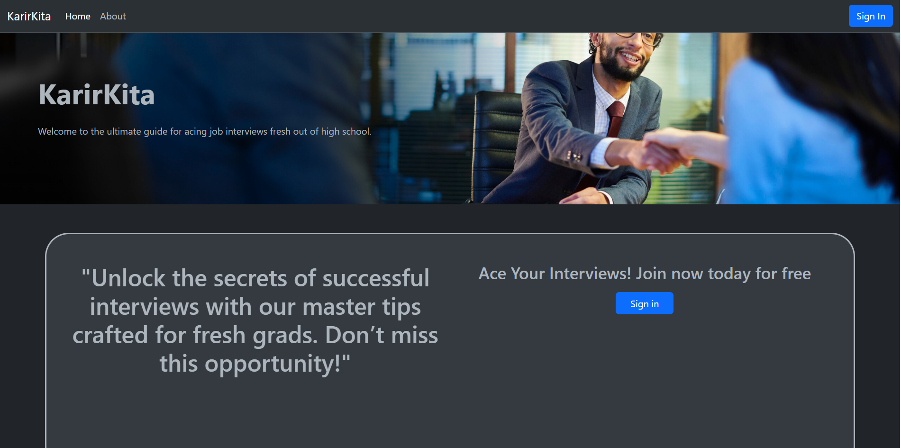

About Me
Hello! I'm Maxmilian, a high school student from Jakarta with a strong interest in AI, machine learning, and cybersecurity. I'm currently studying at ACS Jakarta and aiming to make a positive impact in the tech world.
LinkedIn | maxmilian.halim@gmail.com | he/him
Education & Certifications
ACS Jakarta
Expected Graduation: May 2025
Predicted IB Score: 42/45
Relevant Coursework: English A SL, Math AA HL, Mandarin Ab Initio SL, Physics SL, Computer Science HL, Psychology HL
Certifications
- Machine Learning Specialization – Stanford & Deeplearning.AI (2024)
- Python Masterclass – The Logic Coders (2021-2023)
- Zero-Day Attack Detection – Pioneer Academics (2024)
- First Aid Level One – International SOS (2023)
- Bali Canyoning Courses – ICOpro Recreational (2019)
Experience
Klinair – Co-Founder, President [2022-present]
Founded a non-profit distributing air filtration devices to under-resourced schools in Jakarta, enhancing air quality for over 2,000 students and saving schools over $35,000 on air filtration devices.
Klinair WebsiteVice President – Youth Action Hub Indonesia [2022-present]
Led youth engagement in sustainable solutions, registered under the United Nations Conference on Trade and Development (UNCTAD), driving local impact on global issues.
Content Researcher – Women in Tech Security [2024-present]
Researched cybersecurity topics to spread awareness about online safety, focusing on issues like DDoS, ransomware, and MAC spoofing.
Cybersecurity & Data Analyst Intern – Aegin Prima Solusi [2024]
Gained hands-on experience with network components and configurations, developed skills in Splunk and data analytics, and created dashboards for IT operations monitoring.
ACS Jakarta Coding Club Co-founder [2023-present]
Founded a school coding club, fostering a passion for technology and programming. Oversaw the club's management. Facilitated coding sessions for club members to learn coding languages and tools (e.g., Python, Java, HTML/CSS).
Projects
Comparative Analysis of Novelty Detection Algorithms
Published a research paper on machine learning approaches to network intrusion detection systems at ICAMIMIA, Surabaya, Indonesia (2023).
 Paper linkNASA Space Apps – "Titan City 3023"
Developed a colony simulation game on Titan, Saturn's moon, using Godot and GDScript as part of NASA’s Space Apps challenge.
 itch.io linkCodeavour 5.0 - Search and Rescue Drone
Programmed an AI-based drone for search and rescue, which won 2nd place in Codeavour 5.0 Indonesia and qualified for the global round in Dubai.
Karir Kita Platform – Backend Developer
Built a mock interview platform using WebRTC and JavaScript, facilitating connections between job seekers and professionals.
 GitHub linkContact Details
Email: maxmilian.halim@gmail.com
Phone Number: +62-811-2232-999